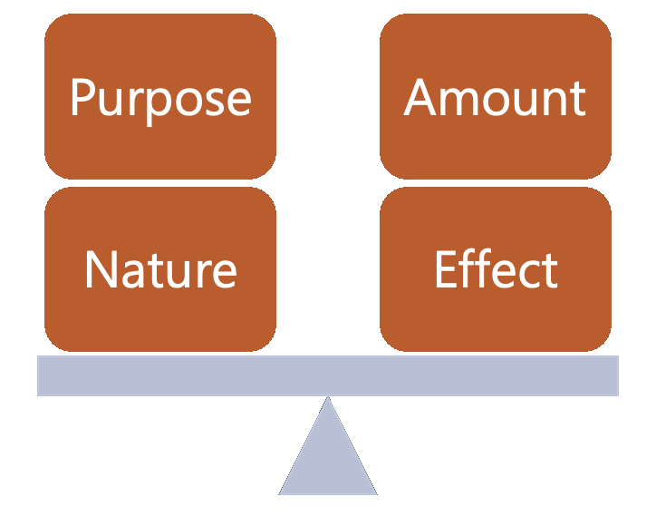

Emulation for Archivists
Intellectual Property
Before you embark on an emulation project, know there are legal implications involved. Quick word of advice is to always err on the side of caution, especially if you're doing work on behalf of a client or institution. While we can't control everything you choose to do, here are some legal and ethical considerations to keep in mind before you move forward.

Tip: Laws will vary depending on where you are based. This guide will speak from a U.S.-perspective. We are also not trained lawyers, so we suggest you seek appropriate counsel if you are working with a more difficult situation to navigate.
Software copyright
Software and its hardware-specific variant known as firmware must always be assumed to be under copyright. In the U.S., computer programs are considered literary works under Title 17 of the United States Code(opens in a new tab) outlining U.S. copyright law. In addition, the Digital Millennium Copyright Act (DMCA)(opens in a new tab) makes it illegal to bypass any form of copy protection. These forms of protection are often known as Digital Rights Management (DRM) technologies.
Video game developers have been known to go after others developing emulators for game access. In 2017, Atlus, a Japanese video game developer, filed a DMCA takedown against the creators of the open-source Playstation 3 emulator RPCS3(opens in a new tab), notable for running the video game Persona 5. The emulator's Patreon page was advertising access to the game by emulating playability on a PC.
Note that the emulator RPCS3 is still up and running despite the takedown notice, given the existence of the emulator itself is legal. It is the claim of having access to content under copyright, the video game, that takes the situation into murkier waters. ROMs, short for read-only-memory, store data for videogames and cannot be electronically modified per copyright and DRM restrictions. Running the ROM through the emulator can be considered a modification and new means of distribution and access, and thus a potential infringement of copyright law according to DMCA. The two groups eventually settled by having RPCS3 remove all references of the video game from their Patreon page.
This example is only one of many, many of which have lead to varying results between groups. However, while the example is in the video game realm, this illustrates the kinds of legal challenges that can arise in a variety of contexts.
Layered rights
Another legal complication are layered rights. A copyright owner of a work can transfer their rights to you for a project; however, there may be other rights embedded within the work that cannot be transferred over. Some rights may be specific to a certain use or instance.
For example, the creator of the work may have secured their own rights for using another work within their final project. This can be the use of a font, song, photograph, or a moving image clip—all of which are considered works that may have their own copyright protections. The creator may have the right for use; you as another entity using and redistributing the work may not.
Tip: We suggest you have all documentation of copyright agreements available from a donor before beginning an emulation project. Reduce risk and surprises while you can—you don't want to invest significant efforts and then come across copyright hurdles hindering you from making your work accessible!
Agreements may sometimes be lost over time or untraceable. This is where professional ethics and case-by-case judgments can step in. If there is a popular Top 40 song or footage from a film licensed by a large production studio within the work, you may need further documentation and certainty of copyright agreements before you move forward. If you decide to move forward and accept potential risks, note that you and your institution may be issued a DMCA takedown notice by a copyright holder or creator.
Lastly, some works or individuals within the work may also be unwilling to be included within an emulation project and not have copyright laws from a legal framework to protect themselves and their interests. For example, while legal frameworks exist for certain works, working with Indigenous materials are moreso guided by ethical frameworks implemented by practioners in the archival field rather than legal ones.
We hope you'll approach an ethics of care in your work (Caswell 2016). Talk to other archives colleagues and read publications in the field to learn from others' work and experiences. Learn from the individuals and communities you work with and for. These practices can help inform your own ethics as an archival professional.
The fair use test
Access is a defining motive for archival work. With access comes potential risks, specifically the copyright and intellectual property concerns discussed at length in this section.
- To decide whether your project or access of a work through the use of emulation constitutes fair use, you can use the "fair use test" as defined by Section 107(opens in a new tab) of the U.S. Copyright Act:
- Purpose: Fair use statutes indicate that nonprofit educational purposes are generally favored over commercial uses. It also states several purposes appropriate for fair use, such as criticism, comment, news reporting, teaching, scholarship, or research.
- Nature: This factor centers on the work being used. Some considerations to take into account include whether the work is copied, unpublished, informational, or entertaining. The unpublished "nature" of a work can weigh against a finding of fair use. A court may reason that copyright owners should have the right to determine circumstances of "first publication."
- Amount: This factor questions how much of the work you are using. A general guideline is the more you use, the less likely it's fair use. There are varying units of measurement for "amount." For example, a thumbnail of an image or a low-resolution version may also be considered a "lesser amount."
- Effect: This factor discusses the potential market of the work or value of the work in question and the impact your use may have on the copyright holder. This factor is also closely linked to "purpose." While you may be making work accessible through emulation, your institution may also financially benefit from the work's display through other means, such as funding or gallery admission sales to view the emulated work.
Note that while your use of emulation for a work may fall under some factors or specific purposes under a given factor, it must pass a balance of all four factors in the fair use test. Depending on the content and the financial circumstances of a corporate entity holding the rights of a given work, courts and individuals may still find a way to penalize you for use regardless. However, know that fair use is a legal principle that can support you.

A fair use argument for emulation
Now let's look at a specific example of fair use cases for emulation. In 2019, Apple sued Corellium, a security firm developing software for analyzing Apple products, specifically an iOS emulator. A judge in the U.S. District Court for Southern Florida issued their ruling in late 2020 claiming Corellium's actions constituted fair use. The judge found that "Corellium was not cloning iOS as a means of competing with Apple, but was genuinely using Apple's work as the basis of creating something new." Read more about it in this Ars Technica article here(opens in a new tab).
The notion of "creating something new" remains foundational when evaluating the use of emulation. It provides grounds for the argument that emulating work for preservation and archival needs can benefit new and greater intellectual understanding within society and provide access to crucial works that may be forgotten within the cultural record. Emulation can also provide access to digital artifacts industry and capital-driven changes have left little to no other options for. However, as we previously discussed, there are always going to be many other factors to consider.